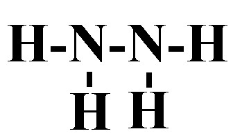
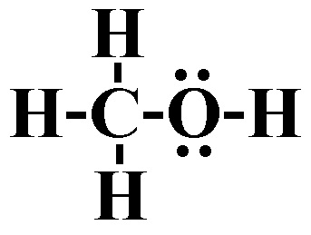
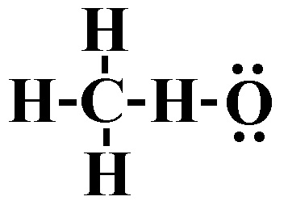
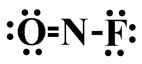

1) Which of the following shows the best Lewis structure for OCl2?
A)
B)
C) *
D)
Oxygen has 6 valence electrons and chlorine has 7 valence electrons. Both oxygen and chlorine must have an octet. is the only structure with the correct number of electrons (6 + 7 + 7 = 20), where both oxygen and chlorine have an octet.
2) Which of the following shows the best Lewis structure for N2H4?
A) *
B)
C) 
D)
3) Identify the strongest bond.
A) Single covalent bond
B) Double covalent bond
C) All bonds are the same strength
D) Triple covalent bond*
Triple bonds are stronger than double bonds, which are stronger than single bonds.
4) Which of the following shows the best Lewis structure for ICl5?
A)
B)
C) *
D)
I has 7 valence electrons, and Cl has 7 valence electrons. I can get more than an octet because it is below the 2nd period. Chlorine will only get an octet because it is not the central atom. The formal charges need to be as close to zero as possible. is the only structure that contains the correct number of electrons (7 x 6 = 42) where all the formal charges are zero.
5) Which of the following shows the best Lewis structure for CH3OH?
A)
B) *
C) 
D)
6) Which compound has the smallest ionic character in the gas phase?
A) CO
B) LiF
C) Cl2*
D) HCl
The compound with the smallest ionic character will be the one with the smallest dipole.
The smallest dipole moment will be between the two elements that have the smallest difference in electronegativity. Generally speaking the elements with the smallest difference in electronegativity will be closest on the periodic table. However, you should remember that hydrogen has an electronegativity that is around that of metalloids. In other words, it is low for a nonmetal.
7) Place the following bonds in order of increasing ionic character.
Si-P Si-Cl Si-S
A) Si-P < Si-Cl < Si-S
B) Si-Cl < Si-P < Si-S
C) Si-Cl < Si-S < Si-P
D) Si-P < Si-S < Si-Cl*
The bond with the lowest ionic character will be the between elements closest on the periodic table. Since Si and P are the closest on the periodic table, they will have the lowest ionic character. Since Si and S are the next closest, they will have the second to lowest ionic character. Si and Cl are the furthest on the periodic table, so they will have the largest ionic character.
8) Which of the following shows the best Lewis structure for BH3?
A) *
B)
C)
D)
9) A single covalent bond contains how many electrons?
A) 4
B) 3
C) 2*
D) 1
A single covalent bond contains 2 shared electrons. A double covalent bond contains 4 shared electrons. A triple covalent bond contains 6 shared electrons.
10) Which of the following elements is the most electronegative.
A) Potassium
B) Fluorine*
C) Lithium
D) Bromine
The trend for electronegativity is that it increases as you go up and to the right on the periodic table. However, noble gasses have an electronegativity of approximately zero, so fluorine has the highest electronegativity. Thus in this case, fluorine is the most electronegative.
11) Which of the following bonds is most polar?
A) H-F*
B) H-I
C) HCl
D) HBr
The most polar bond will be the one with the largest dipole moment.
The largest dipole moment will be between the two elements that have the largest difference in electronegativity. Generally speaking the elements with the largest difference in electronegativity will be furthest on the periodic table. However, you should remember that hydrogen has an electronegativity that is around that of metalloids. In other words, it is low for a nonmetal.
12) Which of the following shows the best Lewis structure for NOF?
A) *
B) 
C)
D)
13) Give the molecular shape for CO2
A) Tetrahedral
B) Bent
C) Trigonal planar
D) Linear*
Step 1: Draw the Lewis Structure. Step 2: Count the number of electron domains: the number of lone pairs and number of atoms bonded to C. You should get 2 electron domains, of which 0 are lone pairs. 2 electron domains and 0 are lone pairs corresponds to a linear molecular shape.
14) What is the molecular shape of H2O?
A) Trigonal planar
B) Bent*
C) Trigonal pyramidal
D) Tetrahedral
Since the Lewis structureof H2O has 4 electron domains, 2 of which are lone pairs, the molecular shape of H2O is bent.
15) Identify the number of electron groups (electron domains) around a molecule with sp3d2 hybridization.
A) 3
B) 6*
C) 4
D) 2
# Electron domains
Hybridization
2
sp
3
sp2
4
sp3
5
sp3d
6
sp3d2
16) What is the VSEPR shape (electron domain geometry) of CO2?
A) Trigonal planar
B) Tetrahedral
C) Bent
D) Linear*
Since the Lewis structure of CO2 has 2 electron domains, the VSEPR shape (electron domain geometry) of CO2 is linear.
17) What is the molecular shape of SeF6?
A) Trigonal bipyramidal
B) Octahedral*
C) Tetrahedral
D) Trigonal planar
Since the Lewis structure of SeF6 has 6 electron domains, none of which are lone pairs, the molecular shape of SeF6 is octahedral.
18) Which of the following compounds is nonpolar?
A) SiS2*
B) IF5
C) PH2F
D) NHO
SiS2 is linear shaped, which is a symmetrical shape. That means the sulfurs electronegativities will balance out and SiS2 will be nonpolar.
19) Use the molecular orbital diagram shown below to determine which of the following are the MOST stable.
A) F22+*
B) O2-
C) NeF+
D) OF2-
Step 1: Count the number of valence electrons in the molecule. F22+: 12 valence electrons O2-: 13 valence electrons NeF+: 14 valence electrons OF2-: 15 valence electrons Step 2: Fill in the molecular orbital diagram from the bottom up, but make sure to follow Hund's rule (one electron in each orbital in degenerate orbitals before a second with an opposing spin) when filling pi molecular orbitals. Step 3: Determine the bond order. Since after 10 valence electrons, the rest go into anti-bonding orbitals, the lowest number of electrons will have the highest bond order. Bond order = (electrons in bonding orbitals - electrons in antibonding orbitals)/2 Bond order for F22+: (8-4)/2 = 2 Bond order for O2-: (8-5)/2 = 1.5 Bond order for NeF+: (8-6)/2 = 1 Bond order for OF2-: (8-7)/2 = 0.5 Since F22+ has the highest bond order, it will be the MOST stable.
20) Use the molecular orbital diagram shown below to determine which of the following are the paramagnetic (there may be more than one answer).
A) NC+
B) C22-
C) BC2-*
D) B2-*
Step 1: Count the number of valence electrons in the molecule. B2-: 7 valence electrons NC+: 8 valence electrons BC2-: 9 valence electrons C22-: 10 valence electrons Step 2: Fill in the molecular orbital diagram from the bottom up, but make sure to follow Hund's rule (one electron in each orbital in degenerate orbitals before a second with an opposing spin) when filling pi molecular orbitals. Step 3: Determine if there are any unpaired electrons in the molecular orbital diagram. B2-: 7 valence electrons, and odd numbers will always have unpaired electrons = paramagnetic NC+: 8 valence electrons, the pi 2p orbitals get filled, leaving no unpaired electrons = diamagnetic BC2-: 9 valence electrons, and odd numbers will always have unpaired electrons = paramagnetic C22-: 10 valence electrons, the last 2 electrons go into sigma 2p orbital filling it, which means there are no unpaired electrons = diamagnetic
21) Use the molecular orbital diagram shown below to determine which of the following are the MOST stable.
A) C2+
B) NC-*
C) NC
D) C2
Step 1: Count the number of valence electrons in the molecule. C2+: 7 valence electrons C2: 8 valence electrons NC: 9 valence electrons NC-: 10 valence electrons Step 2: Fill in the molecular orbital diagram from the bottom up, but make sure to follow Hund's rule (one electron in each orbital in degenerate orbitals before a second with an opposing spin) when filling pi molecular orbitals. Step 3: Determine the bond order. Since after 4 valence electrons, the rest go into bonding orbitals, the highest number of electrons will have the highest bond order. Bond order = (electrons in bonding orbitals - electrons in antibonding orbitals)/2 Bond order for C2+: (5-2)/2 = 1.5 Bond order for C2: (6-2)/2 = 2 Bond order for NC: (7-2)/2 = 2.5 Bond order for NC-: (8-2)/2 = 3 Since NC- has the highest bond order, it will be the MOST stable.
22) Is XeF4 polar or nonpolar?
A) Polar
B) Nonpolar*
Since XeF4 is square planar (which is a symmetrical shape), the electronegativities of the four fluorines balance out and XeF4 is nonpolar.
23) What is the VSEPR shape (electron domain geometry) of PH5?
A) Trigonal bipyramidal*
B) Octahedral
C) Tetrahedral
D) Trigonal planar
Since the Lewis structure of PH5 has 5 electron domains, the VSEPR shape (electron domain geometry) of PH5 is trigonal bipyramidal.


 *
*